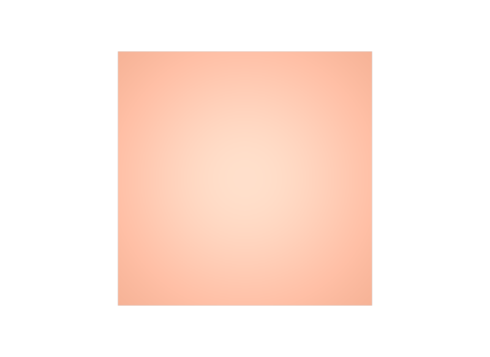

ファイルを読みながらPrimを作る
入力形式が増えたときに、USDを作る部分ごと書き直すことになります。いったんPythonのデータにしてから書きます。
STEP 88 · PIPELINE
読む・変える・書く、の3つに分けて作ります
今日これだけ
公式情報に基づく説明
他のツールの形式からUSDを作る処理をConverterと呼びます。どんな形式が相手でも、構造は3段に分けられます。入力を読む、USDの構造へ対応づける、書き出すです。この3つを混ぜずに書くと、入力形式が変わっても対応づけの部分を作り直さずに済みます。
Diagram
入力
{
"name": "Tile",
"units": "centimeters",
"meshes": [
{
"name": "Panel",
"points": [[0, 0, 0], [100, 0, 0], [100, 100, 0], [0, 100, 0]],
"faces": [[0, 1, 2, 3]],
"uvs": [[0, 0], [1, 0], [1, 1], [0, 1]],
"material": "Paint"
}
],
"materials": [
{ "name": "Paint", "baseColor": [0.85, 0.35, 0.2], "roughness": 0.4 }
]
}1辺100の四角形が1枚と、色の情報が1つあります。単位はセンチメートルです。ここに書かれている「100」を、そのままUSDへ持っていってはいけない、というのがこのあとの要点になります。
Python
import json
from pxr import Gf, Sdf, Usd, UsdGeom, UsdShade, Vt
def read_source(path):
"""1. 読む — 入力形式に依存するのはここだけ。"""
with open(path) as fh:
return json.load(fh)
def unit_factor(source):
"""2. 対応づける — 単位をメートルへ揃える倍率を決める。"""
return {"centimeters": 0.01, "millimeters": 0.001}.get(source["units"], 1.0)
def write_usd(source, out_path):
"""3. 書く — USDの構造を組み立てる。"""
stage = Usd.Stage.CreateNew(out_path)
UsdGeom.SetStageMetersPerUnit(stage, 1)
UsdGeom.SetStageUpAxis(stage, UsdGeom.Tokens.y)
root = UsdGeom.Xform.Define(stage, "/" + source["name"])
stage.SetDefaultPrim(root.GetPrim())
factor = unit_factor(source)
UsdGeom.Scope.Define(stage, root.GetPath().AppendChild("Geom"))
for m in source["meshes"]:
mesh = UsdGeom.Mesh.Define(
stage, root.GetPath().AppendChild("Geom").AppendChild(m["name"]))
mesh.CreateSubdivisionSchemeAttr("none")
mesh.CreatePointsAttr(Vt.Vec3fArray(
[Gf.Vec3f(*[c * factor for c in p]) for p in m["points"]]))
mesh.CreateFaceVertexCountsAttr(Vt.IntArray([len(f) for f in m["faces"]]))
mesh.CreateFaceVertexIndicesAttr(
Vt.IntArray([i for f in m["faces"] for i in f]))
stage.Save()
return stage
write_usd(read_source("source.json"), "tile.usda")関数が3つに分かれています。read_sourceだけがJSONを知っており、write_usdだけがUSDを知っています。別の形式に対応したくなったら、read_sourceと同じ形のデータを返す関数をもう1つ書くだけです。
結果

examples/lesson-54/tile.usda / Apple USD Tools 0.25.2 のusdrecord（Hydra Storm・Metal）/ macOS 26.5.2・Apple M4from pxr import Usd, UsdGeom
stage = Usd.Stage.Open("tile.usda")
mesh = UsdGeom.Mesh(stage.GetPrimAtPath("/Tile/Geom/Panel"))
print(list(mesh.GetPointsAttr().Get()))
# [(0, 0, 0), (1, 0, 0), (1, 1, 0), (0, 1, 0)]
# 入力の 100 が 1 になっている
print(list(mesh.GetFaceVertexCountsAttr().Get())) # [4]STEP 54 metersPerUnitで扱ったとおり、宣言を書くだけでは大きさは揃いません。Converterが値そのものを直す必要があります。ここを忘れると、100倍のアセットが出来上がります。
USDA → Python mapping
段
1. 読む↓Python
read_source(path) — 入力形式ごとに1つ段
2. 対応づける↓Python
unit_factor(source) など — 単位・座標系・命名段
3. 書く↓Python
write_usd(source, out) — USDの構造を作るBeginner notes
よくある間違い
入力形式が増えたときに、USDを作る部分ごと書き直すことになります。いったんPythonのデータにしてから書きます。
metersPerUnitを宣言しても値は直りません。Converterが数値を変換します。
後続の自動処理が探せなくなります。階層の規則を先に決めます。
defaultPrimが無いと、外から参照しにくいアセットになります。書き出しの最後に必ず設定します。
Glossary
metersPerUnitに合う値へ直すこと。Official references
確認日: